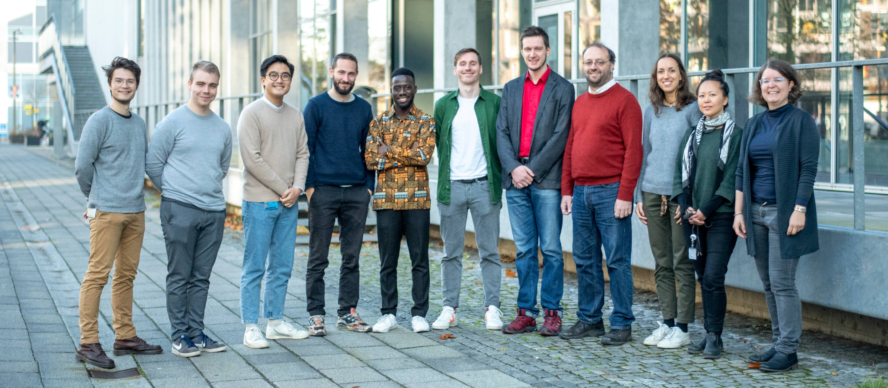

Figure 1: The NLPnorth research unit at the Computer Science department of the IT University of Copenhagen is a team of faculty, postdocs, PhD students, assistants and students who work together on fundamental and applied problems for computational understanding of human languages and speech.
Members
Faculty

Barbara Plank
Transfer Learning

Christian Hardmeier
Multilinguality and Discourse

Natalie Schluter
Hard Computational Models

Rob van der Goot
Robustness

Stefan Heinrich
Computational Neuroscience
Postdocs

PhD Fellows


Research Assistants & Support Staff
- Kristian Nørgaard Jensen
- Sif Dam Sonniks
- Ida Thrane (2020–2021)
- Simon Poulsen
Visiting Scholars
- Sajawel Ahmed (visiting PhD, Goethe University Frankfurt)
- Ahmet Üstün (visiting PhD, 2019)
- Alan Ramponi (visiting PhD, 2019-2020)
- Annouk Braggaar (intern, 2020-2021)
- Musie Meressa Berhe (intern, 2020-2021)
Alumni
- Sigrid Klerke (postdoctoral researcher, 2018-2019)
- Dagmara Płonska (postdoctoral researcher, 2020-2021)
Publications
Our most recent research outputs with more over ITU's PURE.
-
Dialogue and Discourse, 2021
-
Findings of the Association for Computational Linguistics: EMNLP 2021, 2021
-
Proceedings of the Seventh Workshop on Noisy User-generated Text (W-NUT 2021), 2021
-
Proceedings of the 2021 Conference on Empirical Methods in Natural Language Processing, Punta Cana, Dominican Republic, 2021
-
Proceedings of the 2021 Conference on Empirical Methods in Natural Language Processing, 2021
-
Proceedings of the Seventh Workshop on Noisy User-generated Text (W-NUT 2021), 2021
-
RESOURCEFUL-2020: RESOURCEs and representations For Under-resourced Languages and domains, Gothenburg, Sweden, 2021
-
RESOURCEFUL-2020: RESOURCEs and representations For Under-resourced Languages and domains, Gothenburg, Sweden, 2021
-
Proceedings of the Fifth Workshop on Computational Approaches to Linguistic Code-Switching, 2021
-
Proceedings of the 23rd Nordic Conference on Computational Linguistics, Iceland, 2021
-
Proceedings of the Second Workshop on Domain Adaptation for NLP : EACL 2021 workshop, 2021
-
Proceedings of the 16th Conference of the European Chapter of the Association for Computational Linguistics: Main Volume, 2021
2021
Resources
Awesome Neural Adaptation
Survey of awesome work on neural unsupervised domain adaptation.[repo] [paper]
BiLSTM-Aux
BiLSTM sequence tagger in DyNet with multi-task learning / CRF / lexicon + contextual embedding support.[tool] [paper]
DeepSig
Significance testing implementations, including Almost Stochastic Order, bootstrap and permutation.[tool]
UD Frisian FAME
Dependency annotations for a subset of the Frisian FAME! speech corpus.[data] [paper]
MaChAmp
Multi-task learning toolkit for sequence labeling, classification, generation, masked LM, dependency parsing and more.[tool] [paper] [demo]
Reach Out
Corridor 3E, Rued Langgaards Vej 7, 2300 København S